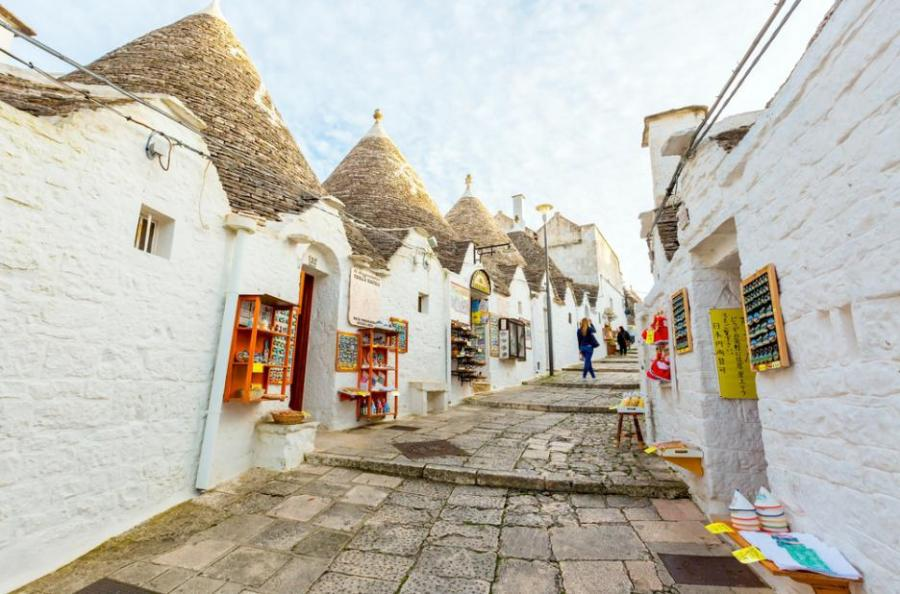

БАРИ - ИТАЛИЯ
"Senatus Populusque Romanus"

- Забележителности:
- Туристически забележителности близо до града
- Матера
- Арбелобело

Трулите на Арбелобело са направени от камък и имат бели фасади, които създават красив контраст със синята небесна безкрайност. Тези малки къщи са строени без употребата на междинни материали или връзки и имат специфична архитектура, която ги прави уникални в света. Те се простиранят в тесни и извишени улички, създавайки една изключително атмосфера на покой и мистика.
Градът е дълбоко свързан със своята история и традиции. В Арбелобело можеш да посетиш Музея на трулите, където ще откриеш повече за техниката на строителство и живота в тези къщи през вековете. Музеят е разположен в едно от най-старите трули в града и предлага поглед в историята и културата на мястото.
Освен трулите, Арбелобело предлага и други забележителности. Една от тях е Катедралата на Света Мария от Арбелобело - една красива романска църква с интересни архитектурни детайли. Късно през лятото, градът оживява с празненства и фестивали, които са израз на местната култура и традиции. Посетителите имат възможност да опознаят автентичната пулийска кухня, да опитат местни деликатеси и да се потопят в атмосферата на празника.
.jpg)